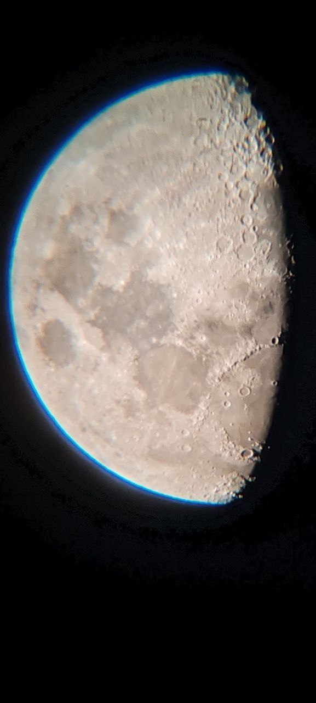
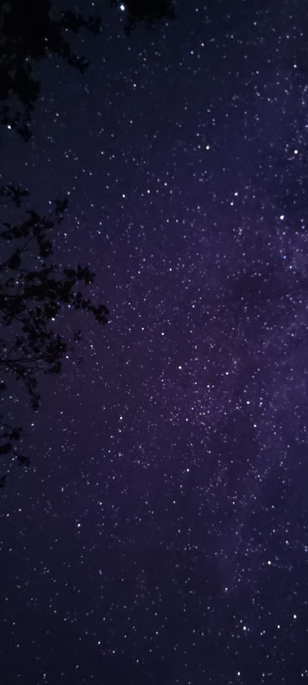
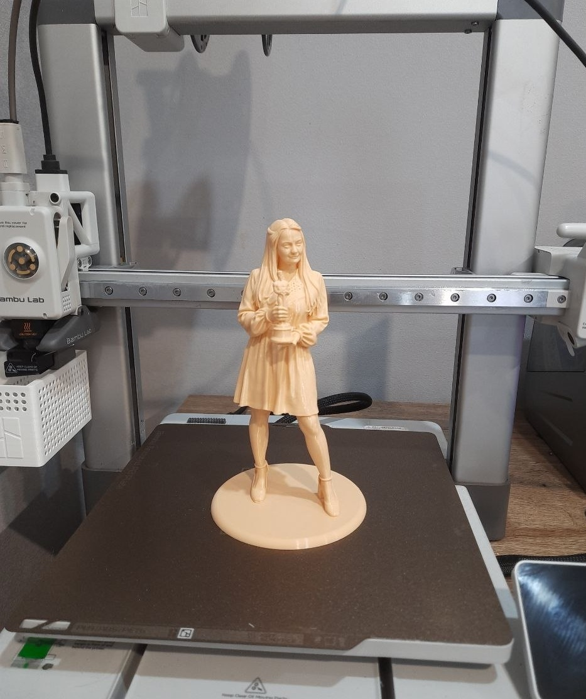
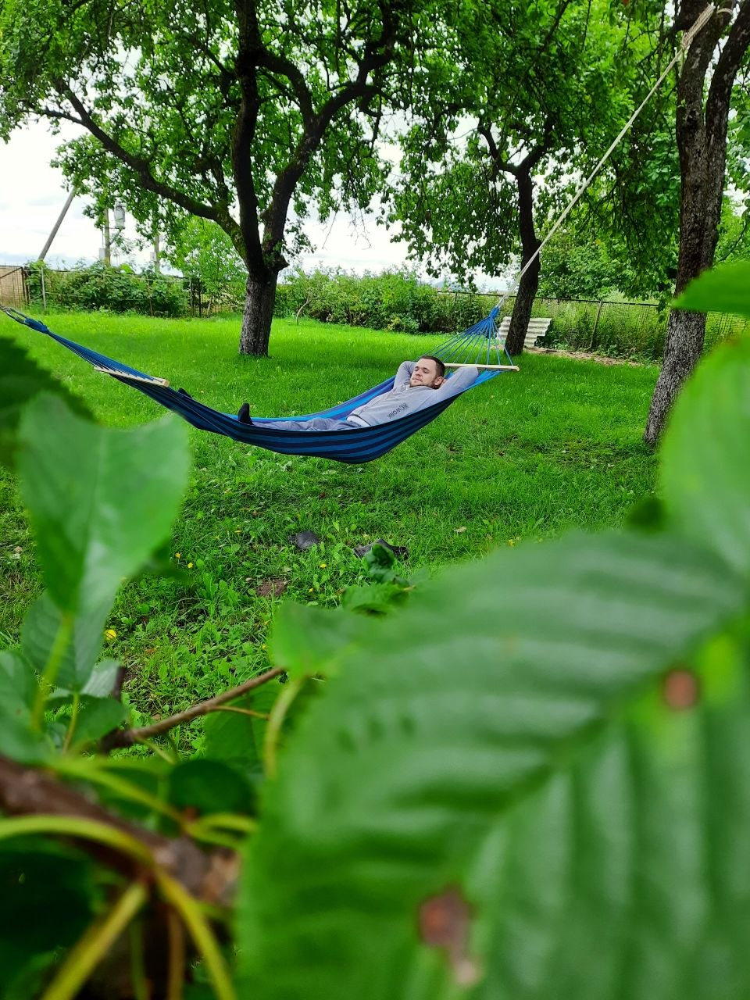
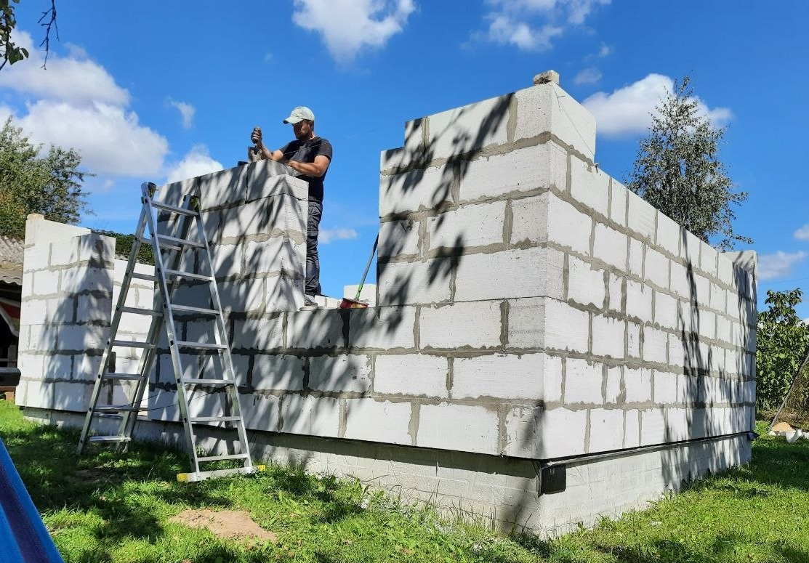

Не уверен, что человек вообще способен трезво оценить свой характер. Поэтому не буду утверждать, какой я — просто расскажу, чем занимаюсь и что люблю, а выводы делайте сами. Днём слежу за порядком на производстве, ночью — за звёздами в телескоп.
Зовут меня Павел, мне 33 года, живу в Гродно. По профессии — мастер смены: отвечаю за то, чтобы работа шла по плану и без сбоев, и за людей, которые рядом со мной эту работу делают.
Немного интроверт — шумным компаниям предпочитаю тишину, своё пространство и занятие по душе: телескоп или 3D-принтер.
Работа и увлечение у меня разные, но подход к ним один — если взялся, доведи до конца.
Слежу за сменой, за качеством и за порядком. Отвечаю за то, чтобы всё было сделано на совесть, а не для галочки. «Мастер смены — должность, где "всё под контролем" означает, что ты просто ещё не нашёл, что сломалось.»

По ночам — телескоп, небо и терпение. Могу подолгу настраивать фокус ради одного хорошего снимка Луны.

Немного интроверт — восстанавливаюсь в одиночестве, под открытым небом, подальше от лишнего шума.

Ещё одно занятие для терпеливых — проектирую модели, печатаю на принтере, разбираюсь, почему опять что-то не то, и переделываю, пока не выйдет как надо.

А иногда лучший отдых — вообще ничего не делать. Гамак в саду, тишина и никаких срочных дел.

Строю сам — от фундамента до кладки стен. Разобраться, как что устроено, и сделать своими руками — отдельное удовольствие.
Главный рабочий инструмент — не столько руки, сколько упрямство. Если задача кажется нерешаемой, это ненадолго.
«Собрать, разобрать, собрать заново — и так, пока не заработает».